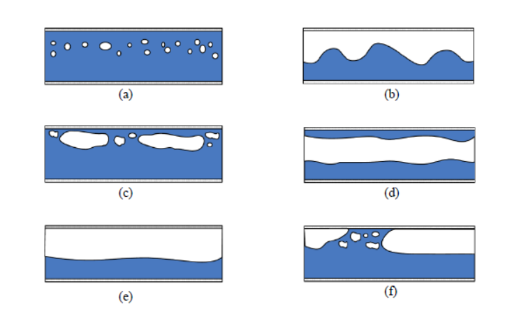

Investigation of chilldown in a LIN transfer line
Year : 2020-21
Course : Master of Technology Thesis
Title : Transient numerical investigation of chilldown phenomena in a LIN transfer line
Chilldown is a critical process that happens during the start up of cryogenic equipment such as storage tanks and transfer lines. It involves the cooling of cryogenic equipment from ambient temperature to the operating temperature of the flowing liquid cryogen. Controlled chilldown of a transfer line is essential to ensure the safe and steady flow of cryogenic fluids, as it prevents thermal stresses, pressure fluctuations, and loss of cryogen happening due to the ambient heat inleaks. Chilldown is achieved typically but letting a small part of the liquid cryogen through the equipment in order to cool the walls of the equipment safely towards the operating temperatures of the cryogen. During this flow, the liquid absorbs heat from the walls and boli-off , thus leading to a two phase flow inside the lines. As the liquid crygoen undergoes various boiling regimes, the flow experiences various two phase flow regimes which impact the thermal and hydrodynamic behaviour of the chilldown process. The study of the heat trasnfer and fluid flow of chilldown is therefore eessenital to design efficienct chilldowns systems which use as less cryogen as possible and reduce the chilldown times.

The current research focussed on charecterizing the velocity and thermal temperature profiles in the film boiling regime of the chilldown phenomena. Film boiling occurs